汽车总线知识扫盲 - 序
前言
汽车行业非常严谨，许多产品都要按照规范设计，首先要搞清楚ISO与SAE的关系。
- 国际标准组织(International Organization for Standardization,ISO)
- 美国机动车工程师学会(Society of Automotive Engineers,SAE)
SAE的J系列标准是为地面交通工具编写的标准，几乎涉及每一个电子元件，面向美国，而ISO是国际标准，国标欧标都会参考ISO的标准。
ISO会参考SAE提供的标准发布新的标准。而且ISO发布的一个标准可能包含多个SAE起草的标准。
汽车内部由许多电子控制单元(Electronic Control Unit, ECU)，分别负责不同的工作，如门控单元、灯控单元等，起初它们都使用点对点的通信方式，而且每项信息都通过独立的数据线进行交换，随着ECU数量的增加，需要消耗的线束也会成倍增加，导致成本增加，占用更多的空间，增加更多重量，而且内部连接也会变得更加复杂，存在更多的隐患。

因此工程师们设计了基于总线通信的方案，每个ECU都连接在一条总线上面，避免了点对点通信方式存在的隐患。
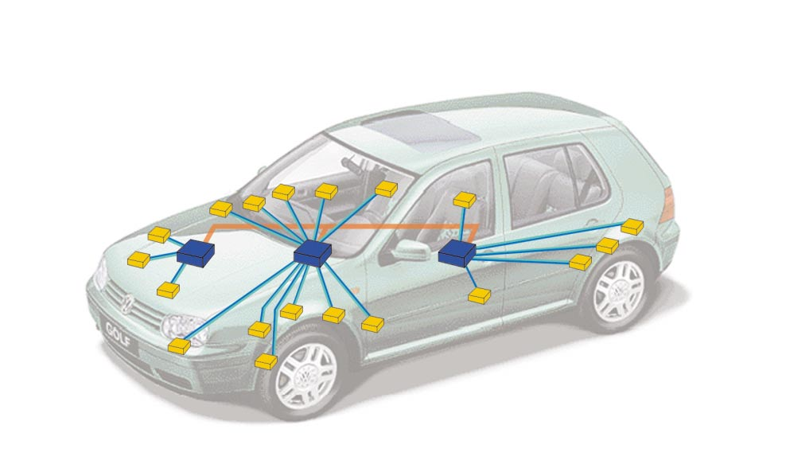
SAE根据传输速度把总线网络分成四类
| 类别 | 速率 | 应用 | 协议类型 |
|---|---|---|---|
| A类 | 低于10Kb/s | 车门、空调、座椅 | LIN |
| B类 | 10到125Kb/s | 尾气信息、仪表数据 | CAN |
| C类 | 125Kb/s到1Mb/s | 牵引力控制系统、制动系统 | CAN |
| D类 | 1Mb/s到10Mb/s | 多媒体系统 | Most、FlexRay、Byteflight |
现在国内外汽车内部总线网络大多都使用CAN，也有用LIN，MOST，FlexRay，以太网等网络，目前应用最广泛的还是CAN，本笔记以CAN为中心，延伸到各个知识点。因为众多车企CAN的实现有细节略有差异，也许不符合规范，规范不能满足所有业务要求是一个原因，为了统一，本笔记以ISO规范为准。
CAN
CAN (Controller Area Network，符合ISO 11898)是控制器局域网络，是制造业和汽车产业种使用的一种网络协议，具有速率快，距离远的优点。嵌入式系统和ECU能够使用CAN协议进行通信。
1992年，CAN数据链路层和CAN高速物理层在ISO 11898中已经被国际标准化，由七个部分组成，4、5、6部分稍微看了一下，是对1，2，3的一些缺陷的补充，比较有意义，但是目前国内汽车领域很少使用，所以暂不深入，每部分标题下：
- ISO 11898-1 数据链路层和物理层信号
- ISO 11898-2 高速接入单元
- ISO 11898-3 低速容错接入单元
- ISO 11898-4 时间触发通讯
- ISO 11898-5 低功耗的高速接入单元
- ISO 11898-6 选择性唤醒的高速接入单元
下图是在不同的角度对CAN的分类，CAN的标准和网络模型层次还有实现的关系，目前ISO 11898只涉及物理层(Physical Layer, PL)，数据链路层(Data Link Layer, DLL)和应用层(Application Layer, AL)。
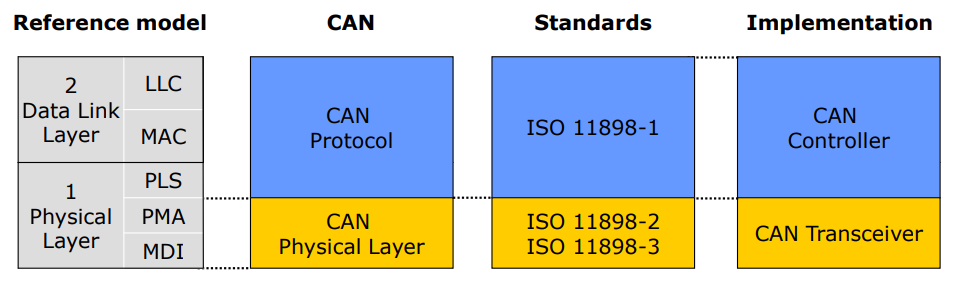
根据ISO/IEC 8802-2规范(IEEE 802.2)，数据链路层可以分为两个子层
- 逻辑链路控制(Logical Link Control, LLC)
- 接收滤波
- 超载通知
- 恢复管理
- 媒介访问控制(Medium Access Control, MAC)
- 数据封装/拆装
- 帧编码(填充/解除填充)
- 媒介访问管理
- 错误检测
- 出错标定
- 序列化/反序列化
物理层可以分为三个子层：
- 物理编码层(Physical Coding Sub-layer, PCS)
- 物理媒介附件(Physical Medium Attachment, PMA)
- 媒介依赖接口(Medium Dependent Interface,MDI)
站在CAN的角度，ECU可以看作是由以下部分组成
- 微控制器(Microcontroller Unit, MCU)，AL
- CAN控制器(CAN Controller)，DLL加上PL的PCS
- CAN收发器(CAN Transceiver)，PL的PMA和MDI
CAN物理层
CAN使用双线差分信号，数据传输在两条线路上：CANH(+)和CANL(-)，通信介质可以是同轴电缆、光纤或双绞线(twisted pair)，有效降低外界干扰，以便差分电路提取出有用信号。
一般使用双绞线作为介质构成串行总线，总线端点加入了终端匹配电阻(阻值和阻抗相匹配)，防止数据在线端被反射，影响数据的传输。新型的CAN总线使用分布式电阻，又叫ECU负载电阻，即发动机控制单元内的“中央末端电阻”和其他控制单元内的高欧姆电阻。
CAN上节点采用多主通讯方式访问总线，每个节点都通过总线相互连接，对节点数量没有限制，所以报文是广播出去的，所有节点都能收到。

CAN信号的传输方式根据MAU的定义可分为高速CAN(ISO 11898-2)和低速CAN(ISO 11898-3)。
ISO11519是低速CAN的标准。起初，高速CAN数据链路层和物理层都在标准ISO11898中规定，后来被拆分为ISO11898-1（仅涉及数据链路层）和ISO11898-2（仅涉及物理层）。其中标准ISO 11519-2-1994已经在2006年被ISO 11898-3-2006代替了,也就是说符合标准ISO 11898-3的产品也是支持符合ISO 11519-2标准的产品。

- 高速CAN速率通常是500Kbps或250Kbps，一般用于实时性需求高的通信，如引擎和ABS。
- 低速CAN速率通常是125Kbps，一般用于门锁、灯光、气囊、空调等。
汽车内部网络可以拓扑多种多样，但是ISO 11898给出的拓扑建议只有线性和星状。
高速CAN的拓扑是线性的，阻抗为120Ω，为了保证传输质量，每个节点之间的距离越近越好。

低速CAN的拓扑可以是线性也可以是星状。
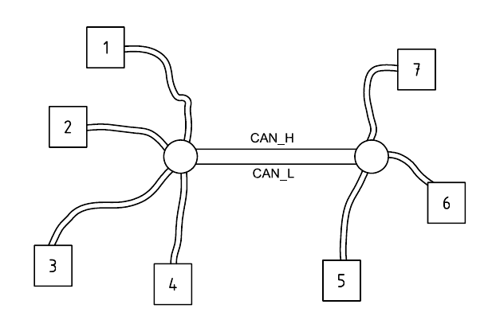
一个汽车内的网络拓扑可以有多种网络共同组成，一般用以太网(Internet Protocal)作为主干网。
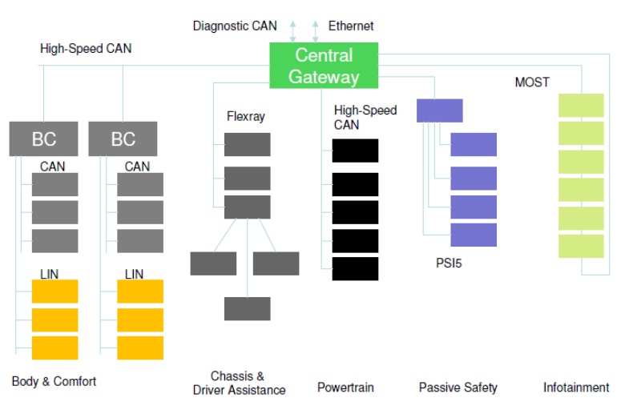
不同的网络通过网关(Gateway, GW)进行互通，网关是用于提供协议转换、数据交换等网络兼容功能的设备。
网关 不同网络的优先级 网关的主要功能是使连接在不同的数据总线上的控制单元能够交换数据，可以安装在仪表内，也可以在ECU内。
低速CAN又称容错CAN，是因为差分信号本身就有避免共模信号干扰的特性，而且低速CAN电平变化幅度比高速CAN更急，所以容错CAN可以靠单线传输，可以在CAN_H或CAN_L出现短路、断路时保证通信正常。
高速CAN的电平波形图

低速CAN的电平波形图

当一个设备输出低电平，而另一设备输出高电平，总线上的电平还是低电平，所以站在逻辑的角度，CAN bus可以有两种逻辑状态:显性(recesive)和隐性(dominant)。根据电平可称为显性电平和隐性电平，因此可以把它当作二进制流，显态为0，隐态为1。
分辨CAN总线
首先找到双绞线，可以通过颜色区分汽车线束上的CAN总线，不同厂商可能数量和颜色都不一样
- CAN_H
- 动力CAN(Powertrain CAN) 橙/黑
- 舒适CAN(Convenience CAN) 橙/绿
- 信息娱乐CAN(Infotainment CAN) 橙/紫
- 仪表CAN(Instrument CAN) 橙/蓝
- 诊断CAN(Diagnostic CAN) 橙/红
- CAN_L 橙/棕
当Vcc的标称电压为5V的理想情况下，CAN总线电压如下，可以根据线束电压特点找到并区分CAN线。但要注意部分总线存在睡眠模式(舒适、信息娱乐存在，动力总线无睡眠模式)，新型的CAN总线有低功耗模式。
- 高速CAN：
- 显态：CAN_H 3.5V，CAN_L 1.5V，电位差为2V
- 隐态：CAN_H、CAN_L均是电压2.5V
- 低速CAN
- 显态：CAN_H 3.6V，CAN_L 1.4V，电位差为2.2V
- 隐态：CAN_H 4.7V，CAN_L 0.3V，电位差为4.4V
基于CAN的应用层扩展协议
CAN可以分为高层协议和底层协议，CAN的应用层协议也叫基于CAN的高层扩展协议(HLP)，一般在第七层。
下面是基于CAN的高层扩展协议。
- 1992: CiA 201 series (CAN Application Layer)
- 1994: IEC 62026-3 (DeviceNet)
- 1994: SAE J1939 series
- 1994: EN 50325-4 (CANopen)
- 1999: ISO 11992 series
- 1999: MilCAN
- 2000: IEC 61162-3 (NMEA 2000)
- 2002: ISO 11783 series (Isobus)
- 2004: ISO 15765 series (OBDII/ISO-TP)
- 2007: Arinc 825/826
- 2015: UAVCAN
帧
物理层把模拟信号转换成数字信号传给数据链路层，帧可以看作是数据链路层控制的协议数据单元(Protocol Data Unit, PDU)，每层PDU的叫法都不一样。物理层称作位(bit)，网络层称作包(packet)，应用层称作报文(message)。
CAN节点之间数据的发送和接收由4种不同的帧掌控。
- 数据帧(Data Frame, DF) 携带从发送节点至接收节点的数据
- 远程帧(Remote Frame, RF) 向其他节点请求发送具有同一标识符的数据帧
- 错误帧(Error Frame, EF) 节点检测到错误后发送错误帧
- 超载帧(Overload Frame, OF) 在先行的和后续的数据帧（或远程帧）之间附加一段延时
数据帧和远程帧通过帧间空间(interframe space)与上一帧（不论类型）分开，错误帧和超载帧则不用通过帧间空间与上一帧分开。
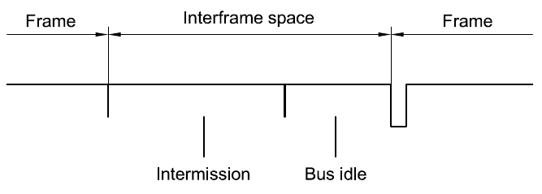
帧间空间包括分隔域和总线空闲(bus idle)，分隔域由三个隐性电位组成，总线上没有帧被传输的时是空闲状态，这时候总线处于静电位，也就是隐态(1)，可以任意长度。
数据帧
CAN协议包括经典的CAN和新推出的CAN FD(CAN with Flexible Data rate)。
经典CAN即CAN 2.0，由博世在1991年推出，A/B(part A and part B)。CAN FD由博世和其他专家在2011年推出，又叫灵活CAN。A部分和B部分分别规范了两种帧格式：标准帧和扩展帧。因此数据帧可以分为4种：
- 经典CAN的标准数据帧(Classical Base Frame Format, CBFF)
- 经典CAN的扩展数据帧(Classical Extended Frame Format, CEFF)
- 灵活CAN的标准数据帧(FD Base Frame Format, FDFF)
- 灵活CAN的扩展数据帧(FD Extended Frame Format, FEFF)
CAN数据帧大体结构如下
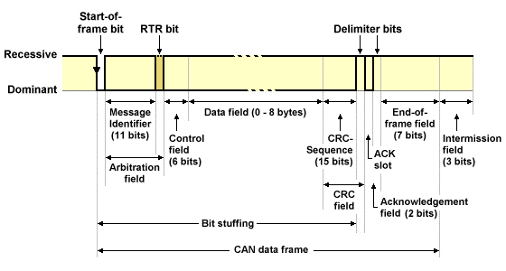
主要由8个部分组成
- 帧头
- 仲裁域
- 控制域
- 数据域
- 校验域
- 应答域
- 帧尾
- 分隔域
标准帧
CAN的有效载荷为8字节，传输速率1Mb/s。CAN FD(CAN with Flexible Data-Rate)有效载荷可以大于8字节，最高64字节，因此传输速率可达8Mb/s。

CAN和CAN FD的帧结构相同，细节不一样。
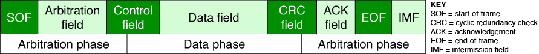
扩展帧

扩展帧可以链接在一起形成更长的ID。扩展帧用替代远程请求(SRR)代替远程传输请求(RTR)，标识符扩展(IDE)也设位1。
仲裁
CAN和以太网都是属于广播形式的网络，为了减少数据的冲突和重传，以太网使用了载波监听多路访问/冲突检测(Carrier Sense Multiple Access/Collision Detection, CSMA/CD)机制，在发送数据之前，以太网会“监听”线缆，判断是否已经有其他数据传输。
CAN里面也使用了这个机制，把这种解决冲突的方式称作仲裁，当总线空闲的时候，任何节点都可以传输以上帧。
仲裁期间，发送器会使用一种逐位仲裁的方式(bit-wise arbitration)，帧头(Start of Frame, SOF)的比特位是0，在确定总线空闲之后，帧头才能被发送，紧接着在11位仲裁域，对比每一个被传输的比特位和总线上被监视的电位，如果和其他帧冲突马上就能发现。显性位优先，仲裁ID的值越低，优先级越高。
- 当总线电位和被传送的电位相同，则继续发送下一位。
- 当其他节点在总线发送了一个显性位(0)，如果一个隐性位(1)被发送过去，此时就会仲裁失败，停止发送任何比特。
- 当其他节点在总线发送了一个隐性位(1)，如果一个显性位(0)被发送过去，那么此时发送的节点会检测到错误。
下图因为Node3的仲裁ID的值最低，所以优先传输。
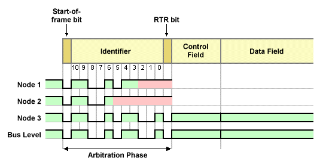
逐位仲裁可以解决不同ID或者不同类型的帧冲突，如果一个数据帧和一个远程帧冲突，数据帧优先，因为数据帧RTR位是显态(0)，如果冲突的帧相同ID相同类型，则会仲裁失败并产生错误帧。没有响应或因错误导致帧损坏会仲裁失败，这种情况会自动把帧重传。
当多个节点同时广播消息时，为了解决冲突，优先级较高的节点作为主节点，其他节点作为从节点，一个请求和其对应的响应的ID是一致的，冲突产生时，较高优先级的主节点传输数据不受影响，优先级低的节点主动回退作为从节点。等待优先级高的节点传输结束，总线空闲之后重新传输。
规范的制定者把这种产生冲突依然能传送帧的机制称作无损仲裁(non-destructive arbitration)。和以太网不一样，以太网检测到冲突会让所有节点回退。
在DeviceNet(IEC 62026-3)协议里，把逐位仲裁和无损仲裁的机制统称为：载波监听多路访问逐位无损仲裁(Carrier Sense Multiple Access/Non-destructive Bit-wise Arbitration, CSMA/NBA)
因为ISO 11898-1定义的标准CAN是基于事件触发，在实时性方面不足，在ISO 11898-4里描述了一种基于时间触发的CAN发送机制(TTCAN)，利用不同的时间槽避免消息的冲突，目前还没有被广泛实现。
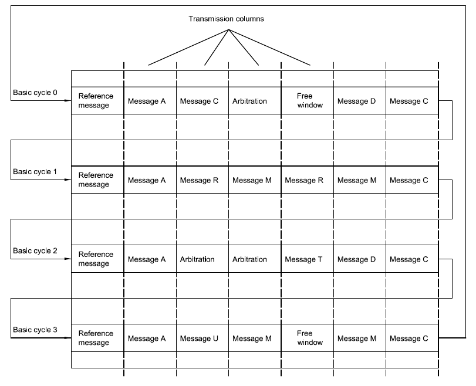
CAN有多种检测错误的措施，监视比较发送器对发送位的电平与被监控的总线电平进行，检查帧格式，CRC校验(经典CAN15位，CAN-FD数据长度8到16比特的17位，数据长度20到64比特的21位)，检查填充位，检查ACK。
On-Board Diagnostics
车载诊断(On-Board Diagnostics, OBD)起初用于尾气排放监测。设想起源于美国通用汽车公司开发的专利：装配线诊断链(ALDL,Assembly Line Diagnostic Link)。通过标准化故障诊断码(diagnostic trouble codes, DTCs, ISO 15031-6/SAE J2012)可以快速识别和纠正车内故障。
ISO 15031是车辆和发射相关诊断用外部设备之间通信的规范，总共七个部分
- ISO 15031-1 一般信息和用例定义
- ISO 15031-2/SAE J1930 术语、定义、缩写词和首字母缩略语指导
- ISO 15031-3/SAE J1962 诊断连接器和相关电路的规范及使用
- ISO 15031-4/SAE J1978 外部测试设备
- ISO 15031-5/SAE J1979 排放相关的诊断服务
- ISO 15031-6/SAE J2012 标准化故障诊断码定义
- ISO 15031-7/SAE J2186 数据链路安全
ODB-II
在OBD-I的阶段，不同的厂商的诊断连接器、连接器位置、DTC和数据读写方式都不同。OBD-II标对连接协议等定制了详细的规范。OBD-II连接器符合SAE J1962标准，有公头(A)和母头(B)组成。D形头，16-pin(2x8)。

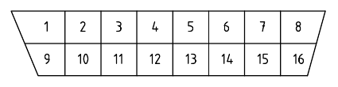
以母头示例，引脚定义如下图
在接CAN的条件下，4是外壳接地，5是信号接地，6是CAN_H，14是CAN_L，16是12v直流电源正极。15031-3也定义了其他协议（ISO 14230,SAE J1850）总线的引脚。
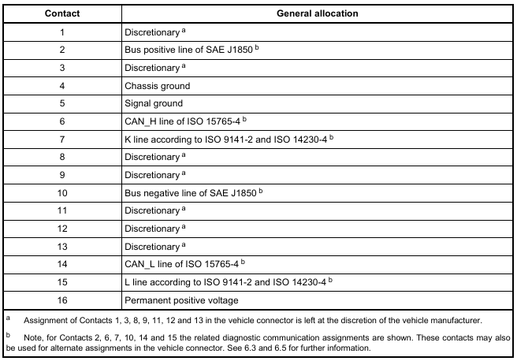
现在车载诊断主流的标准是ODB-II(ISO 15765)，是基于CAN的扩展协议。1996年美国要求所有汽车都要实现OBD-II，2003年欧盟要求所有汽车都要实现EOBD(几乎和OBD-II一样)，2006年国III标准要求汽车要带有OBD，便于检测尾气排放。所以现在几乎所有汽车都配有OBD接口，一般在主驾驶舱的底部，一般通过DB9连接到电脑端。
英版DB9排列
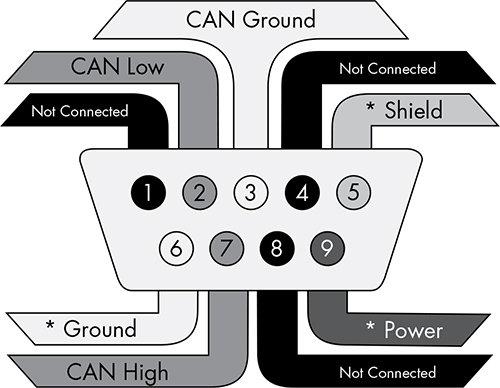
美版DB9排列
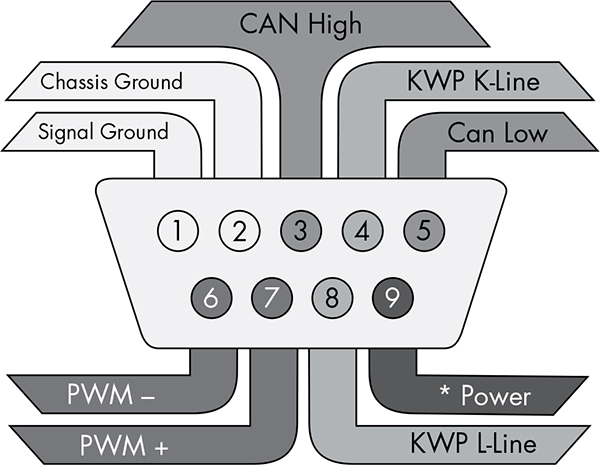
ODB-II规范分为四部分：
- ISO 15765-1 介绍一般信息
- ISO 15765-2 网络层服务规范（ISO-TP）
- ISO 15765-3 应用层规范，UDS在CAN的实现规范。
- ISO 15765-4 物理层到网络层的规范 会话层
把ODB-II按照OSI七层模型划分，可以分为三类
- 诊断服务，详细参考ISO 15765-3
- 网络层服务，详细参考ISO 15765-2
- CAN服务，详细参考ISO 11898
UDS
参考表格对比，右侧是法律要求统一的车载诊断规范,左侧是厂商可定制的增强型诊断(Enhanced diagnosic)，在应用层实现了模块化诊断框架，面向所有ECU，称之为统一诊断服务(Unified Diagnostic Services,UDS)。
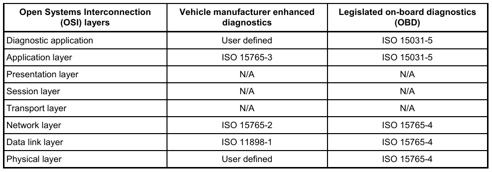
下图是UDS在CAN上面的实现，标记了每一层用到的规范。其中UDS规范就是ISO 14229。

UDS为每个的服务的请求和响应定义了不同的ID
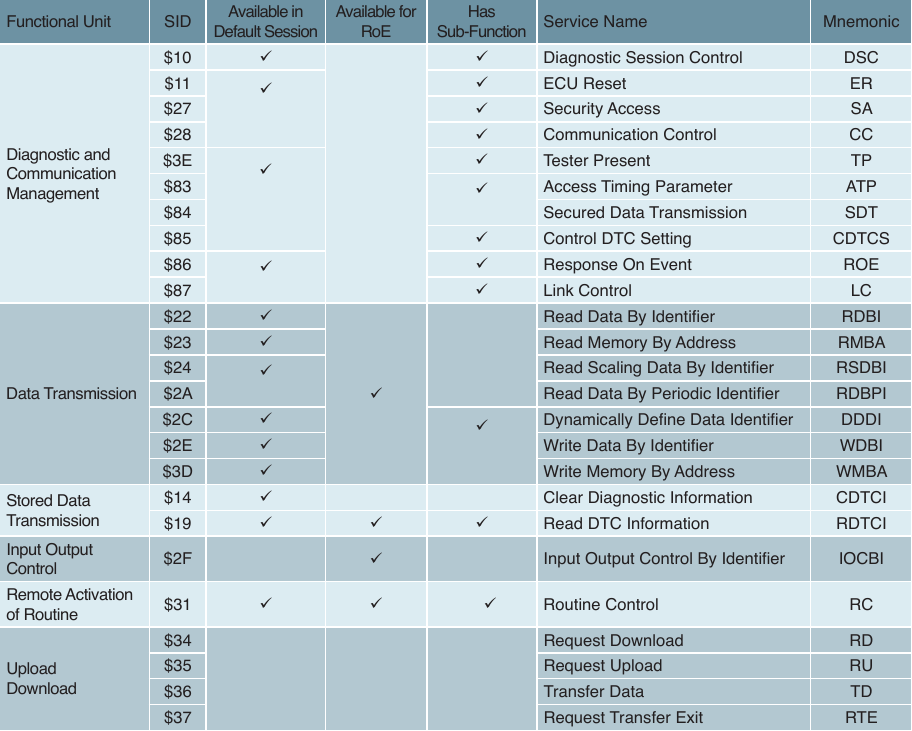
相关资料
CiA: https://www.can-cia.org/can-knowledge
Wiki: CAN bus
CAN Basics
ZLG致远电子:一文读懂容错CAN！
Wiki: On-board diagnostics
THE CAR HACKER’S HANDBOOK
Wiki: Unified Diagnostic Services
UDS - ISO 14229 Info - Softing Automotive
ISO 11898
ISO 14229
ISO 15031
ISO 15765
SAE J1962